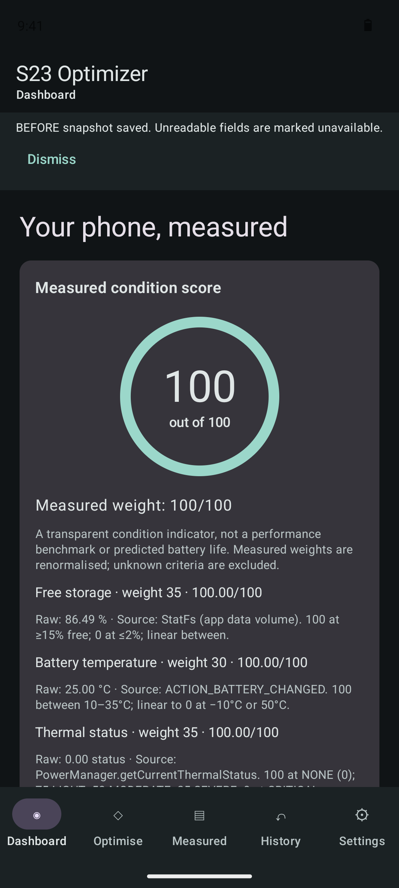
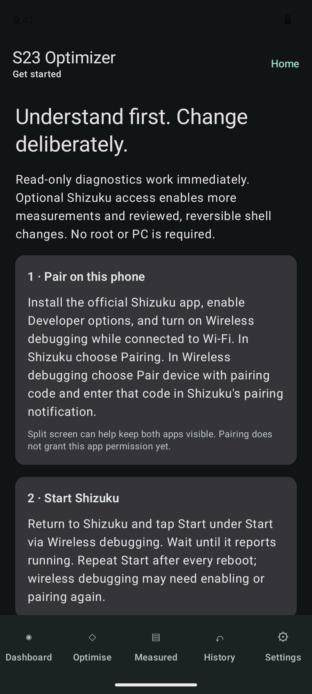
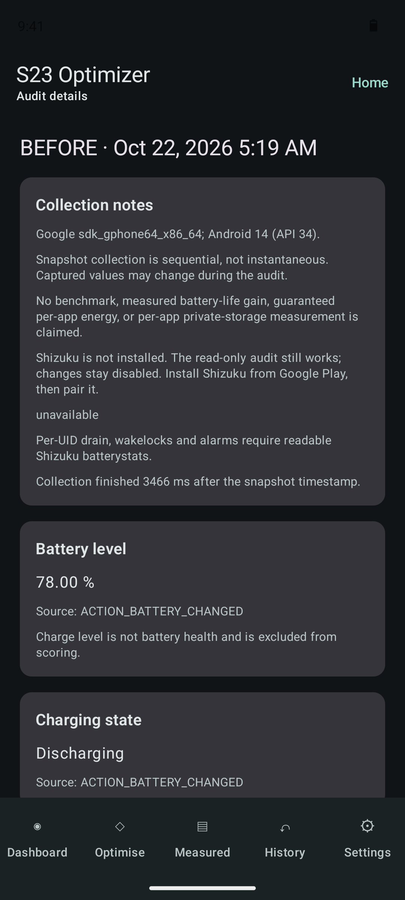
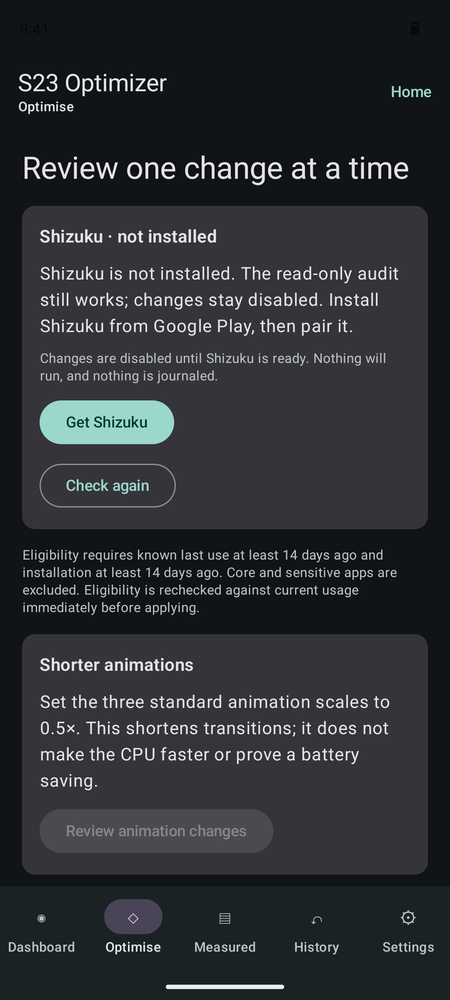
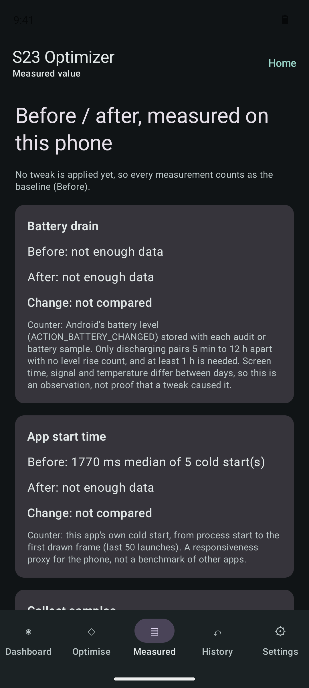
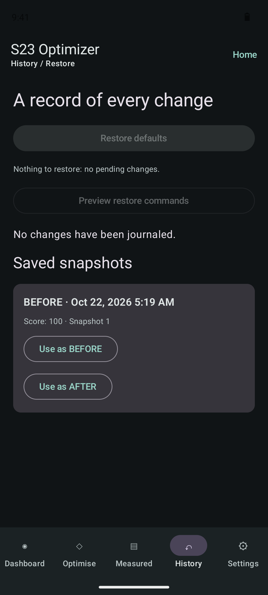
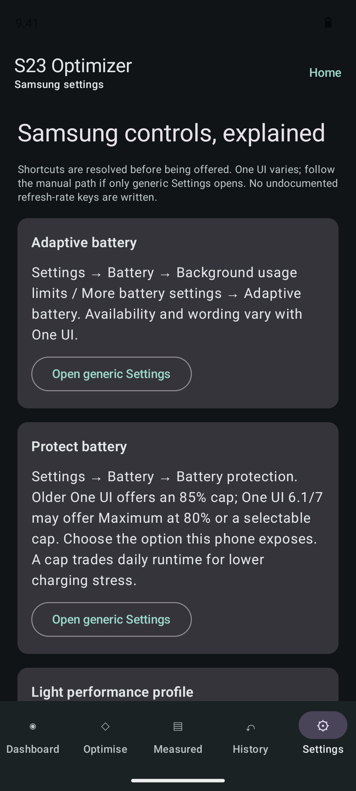

Tune your Galaxy.
Keep the receipt.
S23 Optimizer audits your phone, applies a handful of reviewed tweaks through Shizuku, writes down every value before it changes it, and keeps one button between you and the defaults. No root, no PC, and no claim it did not measure on your phone.
Android 10+ · built for Galaxy S23 Ultra · Apache-2.0 · no INTERNET permission · signed release with SHA-256

Nothing changes until it is written down
Every tweak runs the same five steps. The journal row exists before the shell command does, so a crash, a dead Shizuku or a flat battery leaves a record that Restore can still act on.
-
Read
am get-standby-bucket --user 0 org.example.reader→ 20 -
Journal
STANDBY · before 20 · expected 45 · PREPAREDsaved first -
Apply
am set-standby-bucket --user 0 org.example.reader restrictedexit 0 -
Verify
am get-standby-bucket --user 0 org.example.reader→ 45 · APPLIED -
Restore
am set-standby-bucket --user 0 org.example.reader 20→ 20 · UNDONE
If you changed that setting by hand in the meantime, Restore sees a value that is neither 20 nor 45, leaves it alone, and keeps the row pending for you to decide.
Four tweaks, four exact undos
That is the whole list. Background and standby changes only reach user-installed apps that have not been opened for 14 days and were installed at least 14 days ago. Launchers, keyboards, dialers, messaging, camera, alarms, maps, VPN, accessibility, banking, wallet, Knox and watch apps are never eligible.
| Tweak | What it does | Command | Undo |
|---|---|---|---|
| Background restriction | Stops an idle app from running in the background. Notifications and sync from it may be delayed. | cmd appops set --user 0 <pkg> RUN_ANY_IN_BACKGROUND ignore |
cmd appops set --user 0 <pkg> RUN_ANY_IN_BACKGROUND <previous> |
| Standby bucket | Moves an idle app to rare (40) or restricted (45), so Android runs its jobs and alarms less often. | am set-standby-bucket --user 0 <pkg> rare|restricted |
am set-standby-bucket --user 0 <pkg> <previous bucket> |
| Disable listed bloat | Disables one of seven named packages (Bixby Voice, Samsung Free, AR Zone, Game Launcher, three Meta stubs), only after you opt in. | pm disable-user --user 0 <pkg> |
pm enable --user 0 <pkg>, then pm default-state if it was in its default state |
| Shorter animations | Sets the three animation scales to 0.5×. Transitions get shorter; the CPU does not get faster. | settings put global <scale> 0.5 |
settings put global <scale> <previous>, or settings delete if it was unset |
Measured on the phone, not promised
The Measured screen splits everything at your first applied tweak and shows before and after side by side. Export it as CSV with every raw sample.
What it measures
- Battery drain, %/h. Android's battery level at each audit or hourly sample. Only discharging pairs 5 min to 12 h apart with no level rise count, and at least one hour is needed.
- App start time. This app's own cold start, from process start to the first drawn frame, over the last 50 launches.
- Audit readings. Storage, RAM, thermal status and headroom, battery temperature, CPU frequency samples, refresh rate, animation scales and app inventory, each with its source.
- With Shizuku. Per-UID drain estimates, wakelocks and alarms from
dumpsys batterystats, and every app's standby bucket.
What it does not claim
- A battery-life gain for your phone. Screen time, signal and temperature change between days; the panel is an observation, not proof of cause.
- Exact per-app energy. batterystats figures are estimates per UID and can be shared by several packages.
- The speed of other apps. Cold start is a proxy for how responsive the phone is, not a benchmark.
- Anything it could not read. Unreadable values are shown as unavailable, never as zero.
The app, as CI sees it
Captured by GitHub Actions from the debug build on an Android 14 emulator with no Shizuku installed, so every change control shows its locked state and says why.

Onboarding and Shizuku status

Audit, with the source of every reading

Optimise, locked without Shizuku

Measured before and after

History and Restore defaults

Samsung settings, explained
Safety notes
- One tap back
- Restore defaults writes back every journaled value, newest first. Preview restore commands shows exactly what it will run.
- Dry run first
- The confirm screen lists the read, apply, verify and undo commands for each change and copies them as text. Nothing runs until you tick the box and tap Apply.
- No Shizuku, no changes
- Not installed, stopped, permission pending, permission denied, or root mode: each is named with its fix, and the engine refuses before any shell command or journal write. The audit still runs.
- Never
- No force-stop sweeps, app killing, cache or data clearing, RAM cleaning, or undocumented refresh-rate keys.
- Private
- No INTERNET permission, no analytics, Android backup off. Reports leave the phone only when you export or share them.
- Before uninstalling
- Restore first. Clearing this app's data removes its journal, while the Android settings it changed stay changed.
Install with Shizuku, on the phone
About five minutes, Wi-Fi on, no computer.
- Download the latest APK and its
.sha256, allow your browser to install unknown apps, and install it. - Install Shizuku from Google Play.
- Settings → About phone → Software information: tap Build number seven times to turn on Developer options.
- Settings → Developer options: turn on Wireless debugging.
- In Shizuku tap Pairing; in Wireless debugging tap Pair device with pairing code and type the code into Shizuku's notification.
- In Shizuku tap Start. Open S23 Optimizer and tap Grant Shizuku permission.
After a reboot, turn Wireless debugging back on and tap Start in Shizuku again. Pairing is remembered.
Download the APK